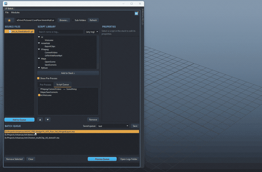

Batch
dcc/maya/batch/main_window.py —
CFBatchWindow, launched from Utilities > CF
Batch. A file-agnostic batch runner: queue any files, stack
tagged (and AI-authored) scripts against them, run. CoreTools' own
clean-room batch-processing implementation — queueing,
module stacking, JSON templates, source-folder favorites.
CFBatchWindow is registered in
RefreshCoreTools.DOCKABLE_TOOLS (see
RefreshCoreTools)
— a real gap existed here for a while: an open Batch window
silently didn't pick up edited code on RefreshCoreTools, unlike
every other dockable app, simply because it had never been added to
that list.
Core concept: three independent things
A batch run combines three things that don't have to relate to each other at all:
- Files — any file type, or none. Batch never opens, inspects, or assumes anything about a queued file; it's just a string handed to whichever script asks for it.
- Pre-process scripts — run once each,
before anything else,
file_path=None. - Per-file scripts — run once per queued
file (or once with
file_path=Noneif the file queue is empty — useful for scene-agnostic operations, like generating a report or cleaning stale temp files).
Nothing here ever auto-opens a Maya scene — a
deliberate, load-bearing design decision. Batch's own runner
(runner.py) just calls
main(file_path, **input_variables) — a script that
wants a scene open calls
cmds.file(file_path, open=True, force=True) itself. See
Scripts/Maya/OpenScene.py, which exists as an explicit,
queueable first step for exactly that reason. This is also what makes
the tool genuinely file-agnostic: the same queue can hold Maya scenes,
FBX files, videos for the FFmpeg script, plain text files, or nothing
at all.
Script contract
A script is any .py file under a library root
(Scripts/ next to main_window.py, or a
folder added via ScriptLibrary(roots=[...])). Folders
become path segments in its display path (e.g.
FFmpeg/ConvertVideo) — what the UI, the queue, and
templates all address it by.
tool_tip = "One-line description shown in the Properties panel."
tags = ["ffmpeg", "video", "convert"] # optional - see Tags below
input_variables = {
"amount": {"type": "int", "default": 1},
"label": {"type": "string", "default": "", "placeholder": "..."},
"enabled": {"type": "bool", "default": True},
"mode": {"type": "choice", "default": "A", "choices": ["A", "B"]},
"ratio": {"type": "float", "default": 1.0, "decimals": 2},
"code": {"type": "plaintext", "default": "", "min_height": 120},
"out_dir": {"type": "folder", "default": ""},
}
def main(file_path, **kwargs):
...
return True # False fails the run; an exception fails it too and is loggedSeven recognized input_variables types, one dedicated
Qt widget each (main_window.py's
_build_input_control()); anything unrecognized falls back
to a plain string field. "folder" is a text field +
Browse... button opening a real folder picker, for
exactly the output_directory-style fields several shipped
scripts already have. Raise
runner.ScriptSkipRemaining(reason=..., skipped_by=...)
from inside main() to abort the rest of that file's
remaining scripts and move on to the next file — it never
aborts the whole run. A script with no main() fails to
load with a clear error the moment the UI touches it (tooltip,
properties panel, or a run attempt).
Main window tour
Three-column body over a file queue — Source Files / Script
Library / Properties — simplified in one place (documented in
main_window.py's own module docstring):
- Source Files (left) — a source path field
with a favorites star, Browse, a Sub-folders checkbox, and
Refresh, feeding an OS-style folder tree (when Sub-folders is
checked; a flat one-level listing if not) with real file/folder
icons via
QFileIconProvider. Lazily populated like a real file browser — a folder shows a dummy-backed expand arrow the moment it's discovered, and its actual contents are only scanned the first time it's expanded, not an eager recursiveos.walk()of the whole tree up front. Folder branches aren't selectable themselves, so multi-selecting always yields real files. Add to Queue moves the selection into the Batch Queue below. On a completely fresh setup (no source path ever saved), the field starts at the current project root (core.project.get_project_root(), the same one Settings > Project resolves) instead of empty — a deliberately-cleared path stays empty on the next launch, since that's a real user choice, not the same as "never configured." - Script Library (middle) — a search/tag-filtered tree, grouped by the script's own folder (see Script library tree), feeding either stack tab via Add to Stack or a double-click. The Script Queue tab is the default, active one; Pre-Process is hidden behind a left-aligned Show Pre-Process checkbox above the tabs (unchecked by default and persisted) — most stacks never use Pre-Process at all. Double-click a stack entry to give it a short note (see Queue entry notes). Each tab's own ordered stack has a checkbox per entry (the enable/disable toggle), Move Up/Down, Remove, and a context menu (Edit Note... when right-clicking an entry / Enable All Scripts / Disable All Scripts / Clear Stack / Save Module Stack / Save Module Stack As... / Load Module Stack... — see Module stacks, not the whole-queue Save/Load Queue below).
- Properties (right) — two modes, whichever
list you clicked last: single-click a library script for a
read-only preview of what it does, or select a
stack entry to edit its live
input_variables(autosaved on every change). See Properties panel. - Batch Queue (bottom) — a
Saved queue search-as-you-type dropdown + Save
button (the whole-bundle kind — see
Named queues), the file list
(right-click a queued
.ma/.mbfile for Preview Clips... — see Preview Clips), Remove Selected / Clear, Process Queue (progress bar tracks each script × file step as it runs), and Open Logs Folder.
A real File menu (Save Queue / Save Queue As... /
Load Queue... / Close) and a separate Modules menu
(Save Module Stack / Save Module Stack As... / Load Module Stack...)
sit above the toolbar, with the AI icon button as the
menu bar's own corner widget (QMenuBar.setCornerWidget())
— the same mechanism CF AnimHub's own menu bar uses for its
corner buttons, not just a visually-similar top-row button. See
AI Companion integration.
Script library tree
The library browser is a QTreeWidget, one top-level
branch per top-level script folder — Scripts/Maya/*
groups under a "Maya" branch, Scripts/FFmpeg/* under
"FFmpeg", Scripts/AnimHub/* under "AnimHub", and so on,
mirroring ScriptLibrary.refresh()'s own recursive folder
walk (model.py) exactly — the UI doesn't discover
anything the model didn't already find, it just presents that
structure as a tree instead of a flat list. Folder branches aren't
selectable or queueable themselves (only leaf scripts are);
double-clicking or Add to Stack on a leaf adds it to
whichever stack tab is active.
Typing in the search box or picking a tag filters by hiding non-matching leaves — a folder with every child hidden hides itself too, so a folder still showing means at least one of its scripts matches. The tree expands fully on every refresh.
Tags
Two sources, unioned: a script's own module-level tags list
(ships with the file, read-only from the UI), and a per-user JSON
sidecar (tags_index.json, outside the library root on
purpose — tagging a shared or version-controlled script never
means editing that file). Right-click a script in the library >
Edit Tags... to add your own. The search box and the
tag dropdown both filter against the union
(ScriptLibrary.search()), and it's the same call
BatchAPI.search_scripts() uses for the AI.
Same right-click menu also has Rename...
(ScriptLibrary.rename_script() — renames the
underlying .py file in place, same category folder, with
the same sanitize-and-uniquify protection new_script_path()
gives an AI-authored name; tags carry over to the new display path)
and Browse to Script (opens Explorer with the file
selected, via explorer /select,). Renaming a script
that's already queued (either stack) migrates every matching
QueueEntry.script_path to the new display path too, so
an in-progress queue never silently points at a script that no
longer exists under its old name.
Favorites
Quick jumps for the source folder (left-click the star to jump,
right-click to add/manage). Favorites are stored as a
real list (core.config.UserConfig, a
flat value CoreTools' own config layer round-trips cleanly), not a
comma-joined string — a folder path containing a comma can't
silently corrupt the list here. Manage Favorites
(right-click > Manage Favorites) opens a small dialog
(favorites_dialog.py) — Move Up/Down/Remove, saved
immediately on every change, no separate OK/Cancel.
Properties panel
One panel, two modes — whichever list you clicked last decides which mode shows:
- Library selection (read-only preview) —
single-clicking a script in the library shows its description,
tags, and a plain-text summary of each
input_variablesentry (type, default, choices, description). Nothing here is editable, because there's noQueueEntryyet to write values back into — it isn't queued. - Stack selection (live, editable) —
selecting a queued entry in either stack tab builds the real
input widgets from that script's
input_variables, current values seeded from that entry's own saved values (falling back to each field'sdefault). Every edit writes straight back intoQueueEntry.input_variablesand triggers an autosave — there's no separate "Apply" step.
Queue entry notes
An optional short reminder shown to the right of a stack entry's
own script name, e.g. FFmpeg/ConvertVideo — 50%
scale pass — purely a memory aid
(QueueEntry.note, never read by runner.py)
for the real situation where the same script gets queued more than
once with different property values (e.g. one ConvertVideo
entry at full resolution, another at 50%) and the stack list alone
can't tell them apart. Double-click any stack entry, or right-click it
> Edit Note..., to set or clear its note; saved
immediately, same autosave as everything else in the stack.
Named queues
Beyond the always-on autosave (see
Templates and autosave), a
queue — the whole BatchQueue: files plus both
stacks — can be saved under a name and reloaded later, from the
File menu (Save Queue / Save Queue As... / Load
Queue... — opens a small searchable picker,
queue_picker_dialog.py) or the Saved queue
dropdown next to the Batch Queue panel's own header (an
editable combo with a substring-filtering QCompleter;
picking one loads it immediately, live-write style, no confirmation
prompt).
A saved queue is a template file — saving/
loading by name are thin wrappers around
model.save_template()/load_template(), the
same JSON shape the temp autosave already uses, just under a chosen
name (sanitized to a safe filename) instead of always
temp_template.json. Loading a queue also becomes the new
live working state (mirrored to the temp autosave immediately), and
KEY_CURRENT_TEMPLATE persists which name is "current"
across restarts.
Module-stack conflict prompt: if the queue being loaded carries a module stack AND the current working queue already has one of its own, loading unconditionally would silently overwrite scripts already queued — so this asks first (Load Both / Files Only / Cancel). Skipped entirely when there's nothing real to lose (either side has no module stack yet).
Module stacks
Just the two script stacks (Pre-Process + Script Queue) — no
files at all, and a genuinely separate save slot from
Named queues above (its own folder,
schema.module_stacks_dir(), never mixed with whole-queue
template names even on a name collision). Save/load a module stack
from the Modules menu (Save Module Stack / Save
Module Stack As... / Load Module Stack...) or the stack
right-click (the same three actions, in both the Pre-Process
and Script Queue tabs' own context menus — you're already
looking at the stack when you want to save what you just built, or
swap in a different one, without touching whatever files happen to be
queued).
model.save_module_stack()/load_module_stack()
write/read just {"pre_process_queue": [...], "script_queue": [...]}
— no file_queue key at all, so loading one can never
touch the file list. BatchQueue.set_module_stack()
applies a loaded stack onto the live working queue, file_queue
left exactly as it was. KEY_CURRENT_MODULE_STACK persists
which name is "current," the same way KEY_CURRENT_TEMPLATE
does for whole queues.
Preview Clips
Batch is deliberately file-agnostic everywhere else in the queue
(see Core concept — it never opens,
inspects, or assumes anything about a queued file in general), but
the context menu is still smart about what a given file actually
is: right-click a queued file, and
Preview Clips... only appears at all for a
.ma/.mb Maya scene — Batch inspects
the file's own extension to offer exactly the one action that's
actually meaningful for that file type, rather than showing every
action on every file regardless of relevance.

Choosing it calls
clip_previewer_window.main(scene_path=path) —
explicit, repeated user preference: Batch itself never
opens the scene, ever, for this. That's a deliberate
constraint on CF Clip Previewer (the
actual tool), not something worked around in Batch:
show_scene(scene_path)— ifscene_pathis already the currently open scene, this is just a normal live view. Otherwise the window switches into external-scene mode: tiles come from the union of two sources, neither one alone being enough —ma_clip_scan.scan_ma_file_for_clips(scene_path)(a plain text scan of the.mafile's owncreateNode/setAttrlines forCF_ClipName/CF_ClipStart/CF_ClipEnd— real clip names and ranges, nocmdscalls, no liveCFClip, works even for a scene that's never had a preview generated) andclip_preview.list_cached_clips_for_scene(scene_path)(whatever preview images are already captured on disk, plus a fallback for.mbscenes the text scan can't read at all). Tiles are read-only_CachedOnlyTiles: thumbnail animates on hover if one's cached, "No Preview" otherwise, name + range as a tooltip, no sync/generate/export/play (those all need real clip nodes). A banner names the scene and offers Open This Scene as an explicit, opt-in escape hatch back into full interactivity — never automatic, and still the only way to actually capture a new preview.- Leaving external-scene mode (Open This Scene, or the real Maya scene changing under it) force-opens and drops straight back into the normal live view for whatever's now open.
ma_clip_scan.py is deliberately narrow,
not a general Maya ASCII parser: CF owns the exact schema being read
(three attributes Batch itself always writes the same way via
CFClip.create()), so this reads Maya's own stable,
well-established text convention for a simple
createNode network +
addAttr/setAttr block — not attempting
references, connections, or compound attributes in general, which
genuinely would be fragile against Maya version/format drift.
Verified against a real Maya-written .ma file, not just
an assumed format (see test_ma_clip_scan.py's own
end-to-end test).
_previews/<clip_name>/ folder and mixed
clips together. clip_preview.preview_dir_for_clip()
now scopes by scene name as well as directory
(_previews/<scene_stem>/<clip_name>/),
which is what makes reading the cache correct without opening
anything.
Run semantics
runner.process_queue(queue, library, progress_callback=None):
- Every enabled pre-process entry runs once,
file_path=None, in stack order. - If the file queue is empty but there are enabled per-file
entries, those still run once each with
file_path=None— useful for scene-agnostic operations. - Otherwise, every queued file gets every enabled per-file entry,
in order.
ScriptSkipRemainingaborts only the current file's remaining entries; the next file still runs in full.
A script returning False fails that step; anything
else (True/None/truthy) counts as success.
Every run produces a RunResult per step and a structured
JSON log
(~/Documents/CoreFlow/Batch/Logs/CFBatch_<timestamp>_log.json,
opened via Open Logs Folder).
Templates and autosave
The working queue mirrors itself to
~/Documents/CoreFlow/Batch/Templates/temp_template.json
on every mutation (add/remove/reorder/enable/property edit) and
reloads from it on launch, so the working queue survives a Maya
restart. model.save_template()/load_template()
work with any path, for named/exported templates.
Storage lives outside UserConfig on purpose: CoreTools'
own config layer only round-trips scalars and flat lists cleanly (see
core/config.py), and a queue is neither — so the
queue, templates, and tag index are plain JSON files, while favorites
(a flat list) go through UserConfig as usual.
FFmpeg
ffmpeg_tool.py resolves an ffmpeg.exe
path in order: an explicit override (Settings > Batch), a
bundled copy next to this package, then whatever ffmpeg
resolves to on PATH — raising a clear error only if
none of those exist — no hardcoded machine-specific binary path
required.
Rescaling (FFmpeg/ConvertVideo's own
resolution field, resolve_scale_filter())
accepts several friendly forms, converted to a real
-vf scale=... argument: "1920x1080"
(converted to ffmpeg's own colon syntax), ffmpeg's native
"W:H" directly (-1 on either side preserves
aspect ratio, e.g. "1280:-1"), a percentage
("50%" → scale=iw*0.5:ih*0.5), or a
full raw filter string (containing "=", passed through
unchanged).
"1920x1080") produced
-vf scale=1920x1080, which ffmpeg rejects outright
— the scale filter takes colon-separated values,
not the x shorthand -s uses. Also guards a
second one: pairing video_codec: "copy" with a
resolution used to emit -c:v copy alongside
-vf scale=..., which ffmpeg refuses ("Filtering and
streamcopy cannot be used together") — scaling now forces a
real encode, omitting -c:v entirely so ffmpeg picks its
own default encoder rather than guessing one.
Shipped scripts
| Script | Tags | Purpose |
|---|---|---|
FFmpeg/ConvertVideo | ffmpeg, video, convert, media | Full option set — format/codec/preset/crf/bitrate/resolution (scale)/fps/trim/overwrite/extra args. |
Maya/OpenScene | maya, scene, open | Opens the queued file as the current Maya scene — the explicit first step for any per-file Maya operation. |
Maya/SaveSceneAs | maya, scene, save, export | Saves the current scene under a new name/location/format. |
AnimHub/ExportClips | maya, animhub, export, fbx, clips | Runs CF AnimHub's own "Export Clips" against the current scene, via export_pipeline.py (the same pipeline AnimHub's own toolbar action calls) — force_all toggles checked-only vs. every non-Ignore clip. Same "acts on whatever's currently open" convention as Maya/SaveSceneAs. |
Python/RunSnippet | python, snippet, utility | Runs a pasted snippet with file_path/cmds in scope — the generic escape hatch, and the exact pattern BatchAPI.create_script() writes into. |
AI Companion integration
The corner AI button opens the
AI Companion, bound with
batch (BatchAPI) and a short primer
describing the library/queue state. As with every other CF Tools AI
integration: the AI proposes Python, you review it, and only after you
click Run does anything touch disk.
list_scripts()/search_scripts(text, tag)/list_tags()/script_info(path)— discovery.create_script(name, code, category="AI", tags=None, tool_tip="")— writes a new script file (must definemain(args, **kwargs)) and registers it, returning its display path for a follow-upqueue_script()call. Always lands in the"AI"category folder by default and always carries an"ai"tag regardless of whatever elsetagssupplies (or doesn't) — every script this method ever produces stays easy to find/filter/audit later as "AI wrote this."queue_script(path, pre_process=False, input_variables=None)/set_script_enabled(index, enabled, pre_process=False)/add_files(paths)/list_queue()/clear_queue().ffmpeg_path()— the realffmpeg.exeCF Batch itself would resolve (Settings > CF Batch override, then a bundled copy, thenffmpegon PATH — see FFmpeg —ffmpeg_tool.resolve_ffmpeg()under the hood), raisingFileNotFoundErrorwith a clear message if nothing resolves. Only valid in the outer script (see below) — never hardcode the bare string"ffmpeg"and assume it's on PATH, it usually isn't.
batch (and every batch.<method>()
call, ffmpeg_path() included) exists ONLY in the outer
script — the one that runs once, immediately, when the user
clicks Run. The code string passed to
create_script() becomes a completely separate,
standalone .py file CF Batch's own runner imports and
calls main(args, **kwargs) on later, per
queued file — batch is not
defined in that context at all. Regression guard for a real
reported bug: the AI put batch.ffmpeg_path()
(and, separately, batch.list_queue() to go fetch "the
current file") inside create_script()'s own
code string — the queued run then failed
immediately with NameError: name 'batch' is not defined
the moment CF Batch's runner actually executed it. Inside
code, args already is
the current file's path (the runner calls
main(file_path, **entry.input_variables) per file
— no need, and no way, to ask batch for it); if
that inner script needs ffmpeg, it must resolve it independently
with its own import —
from CoreTools.dcc.maya.batch import ffmpeg_tool then
ffmpeg_tool.resolve_ffmpeg() — not
batch.ffmpeg_path().
create_script()
itself now rejects any code that contains a
batch.<method>(...)-shaped call, raising
ValueError immediately (before the broken script is
ever written to disk or queued) with a message explaining the same
args-is-the-file-path / independent-ffmpeg-resolution
fix inline. Same lesson as every other curated-API safety fix in
this codebase: once a mistake survives an explicit primer
instruction more than once, the fix moves from prompt wording to
code that actually catches it.
code, prefer letting a genuinely
unrecoverable, clearly-explainable error (like ffmpeg not being
configured) propagate rather than catching it with a
print()-then-return False. The Process
Queue summary dialog only ever shows a generic "main() returned
False" for a plain False return — the
print() text is invisible there, reachable only by
digging through the Script Editor. An uncaught exception's own
message (e.g. ffmpeg_tool.resolve_ffmpeg()'s "No
ffmpeg binary found. Set an explicit path in Settings > CF
Batch...") surfaces directly in that dialog instead, which is what
the user actually needs to see to fix the problem.
create_script()/queue_script() at
all — it hallucinated import coreflow and a
nonexistent coreflow.batch_queue/
register_batch_script() API, silently falling back to a
throwaway local list when the (nonexistent) import failed. The
primer now says batch is already a bound local variable
(not something to import), explicitly rules out
coreflow/batch_queue by name, and gives a
concrete, complete create_script() +
queue_script() worked example — the same "name the
real method, rule out the plausible wrong guess" fix CF AnimHub's own
primer needed once already for
clips.create()/cmds.clip().
ClipsAPI draws around export().
create_script() doesn't open a new trust boundary
either: the code string it writes is part of the same
reviewed Python snippet a human already reads and approves before Run
— the only real difference from any other curated call is that
the result is a reusable file on disk rather than a one-off scene
edit. It still can't execute anything on its own until a human runs it
from the UI or queues it and clicks Process Queue,
exactly like any other library script.